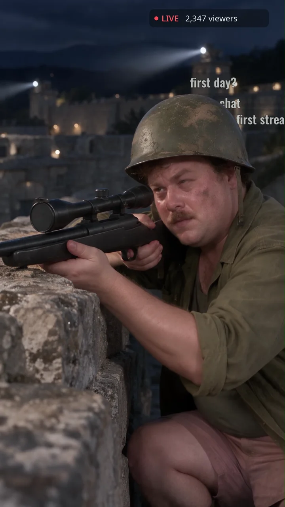

常用模型与工具
- AI 模型与助手
- GPT / Codex
- Seedance 2.5
- Seedream 5.0 Pro
- Nano Banana Pro
- GPT Image
- Lyria 3 Pro
- 制作工具
- Blender
- After Effects
- Premiere Pro
- Mocha
- 剪映
- Python
- Node.js
- FFmpeg
- OpenCV
真人 Drama 买量
精选 3 部


AI-3D
精选 3 部查看全部 6 部 收起其他作品

流程自动化 · 从脚本到成片
AI 全自动化产出
2 部作品输入脚本与画风，由 GPT / Codex 调度制作规则、生成服务与本地脚本，串联资产准备、视频生成、配音配乐、字幕混音和成片交付。人工负责需求设定、样片选择与最终审核。
本组两条案例：30 秒剧情 + 25 秒 AI 玩法示意，均交付 55 秒、16:9、1080p 整片。后半段为 AI 生成的玩法示意画面。
从脚本到完整成片
- 01 输入脚本与画风确定故事、角色和表现方式
- 02 自动制作完整预览资产 → 生成 → 声音 → 合成
- 03 人工选定样片AI 推荐候选，由我确认版本
- 04 自动转正与交付1080p → 合成 → 检查 → 归档
展开全自动化制作流程 · 7 步收起详细流程
- 01
读取脚本，拆解制作要求
读取脚本文字或图片，提取角色、对白、道具和情节因果；结合美术要求与所选画风，编排镜头、动作衔接和时长。本组采用真人与美漫 Q 版两种表现。
产物 剧情结构、分镜提示词、30 秒剧情与 25 秒玩法示意的时长规划 - 02
匹配角色资产，自动补齐缺项
查找已登记的角色与场景素材，按内容、账号和工作区核对版本后复用。缺少的配角、服装或道具按本片画风补制，筛选后登记，保留参考图与角色用途的对应关系。
产物 参考资产、素材登记和生成所用的参考顺序 - 03
自动提交剧情样片并跟踪任务
调用 Seedance 2.5，一次生成包含完整剧情的 30 秒样片，每个脚本提供 4 条 480p 候选。自动查询原任务、下载结果并保存版本对应；返修时重新生成受影响的剧情段。
产物 每条故事的 4 个完整剧情候选与任务记录 - 04
制作玩法示意、解说和配乐
本组案例另行生成 25 秒 AI 玩法示意，独立生成中文解说并提取声音，再用 Lyria 3 Pro 生成配乐。画面、解说与音乐分别保存，便于单独调整。
产物 玩法示意视频、解说音轨与音乐文件 - 05
自动剪接、加字幕并混音
使用 Python 与 FFmpeg 拼接剧情和玩法示意，对齐字幕时序，处理配乐、人声和片段衔接，输出 55 秒完整预览。玩法段保留“AI玩法示意”标记。
产物 可直接审看的完整样片与字幕、时间线、混音记录 - 06
审看候选，完成一次关键选片
AI 辅助比较剧情完整性、角色连续性、对白和动作表现，给出推荐及问题说明；由我观看并选定具体版本。
产物 明确绑定的入选样片，供后续自动转正 - 07
自动转为 1080p，合成并检查交付
按选定样片直接转为 1080p，下载后检查完整性和实际分辨率；重新合成整片，沿用已选预览的混音和字幕时序。检查时长、音轨、字幕与衔接，并保存源片、版本对应和交付记录。
产物 两条 1920 × 1080、24fps、55 秒完整 MP4 与可追溯制作资料
我的工作：搭建流程与把关
将项目美术、参考素材规则、生成参数和交付检查整理成可重复执行的制作流程；提出创作要求、判断候选质量并选择版本。重复的提交、查询、下载、字幕与合成由 AI 和脚本完成，关键创作取舍由我把关。
技术与经验
白模预演 / 自动化流程 / UI 设计 / 多尺寸拓展 / 风格转绘 / 手机屏幕替换
01 / 白模预演 · 空间、镜头与动作
用白模把镜头和动作先做清楚。
在 Blender 中搭建场景、角色体块与摄影机，把站位、移动路线、遮挡和动作节奏放进同一个镜头验证。白模负责空间与时序，美术参考负责外观，再将这些控制信息用于 AI 视频生成。
白模预演
空间 · 机位 · 动作
AI 成片
角色 · 环境 · 光影
空间与动作控制 · 白模预演 / AI 成片
查看做法与过程素材 ＋
- 01
搭建空间与机位
确定人物、目标和遮挡物的位置，验证取景范围、透视关系与运动路线。
- 02
编排连续动作
将角色位移、身体朝向、局部动作和摄影机运动分开控制，明确动作起点、过程和落点。
- 03
对照画面返修
按对应时间检查白模与生成画面；局部修改限定对象和时间段，保留已确认的镜头与动作。
保留白模、环境参考与生成版本，按同一镜头对照空间关系与动作节奏，定位需要返修的部分。
02 / 自动化流程 · 从创作到交付
把重复制作步骤连接成可复用流程。
让素材、生成任务与成片版本始终对应。
用 GPT / Codex 协作整理剧本与制作要求，结合 Python 执行器与生成接口，连接资产复用、任务提交、进度查询、候选下载、样片转正与成片整理。将重复操作交给流程，把创意取舍与画面审阅保留在制作环节。
A PRODUCTION LOOP
01创作要求剧本 / 资产 / 参考职责
↓02任务执行提交 / 查询 / 下载
↓03画面审阅反馈 / 局部返修 / 选片
↓04版本交付映射 / 完整性 / 分辨率
创作判断贯穿每一轮迭代 ↺查看做法与过程素材 ＋
- 01
资产可追溯
以文件哈希、账号和工作区核对资产，记录素材用途与参考顺序，减少重传和版本混用。
- 02
任务可恢复
保存实际请求、任务与输出映射；中断后继续查同一任务，失败时先核对原因。
- 03
交付可检查
区分样片与选定版本，保存转正映射；检查下载完整性、分辨率与媒体可读性。
将脚本拆解、资产准备、视频生成与后期合成串联起来，保留版本记录，便于复用和继续制作。
查看自动化成片与制作流程 ↗我的制作工作流
- 前期准备 剧本 · 资产 · 分镜
- 样片与返修 480p 样片 · 审片 · 选片
- 转正与交付 1080p 转正 · 剪辑合成
展开完整 7 步 收起详细步骤
前期准备
-
定方向，锁剧本
从需求、参考和项目美术出发，确定卖点、剧情反转和结尾。用 GPT 配合编剧技能梳理动作、对白和节奏，先锁定故事与角色关系。
交接产物锁定剧本、故事结构卡 -
备资产，明确参考用途
把人物、道具、场景拆成独立资产。用 GPT 配合图片提示词技能准备设定图，筛选后登记素材版本和 ID，标明每张图负责身份、构图还是质感。
交接产物入选设定图、资产清单、参考顺序 -
拆分镜，预演关键动作
把锁定剧本交给导演技能和 GPT，逐镜安排景别、站位、视线与动作承接。遇到追弹、遮挡或落地等需要精确控制的镜头，用 Blender 白模先排机位和运动。
交接产物文字分镜、视频提示词、必要时的白模
样片与返修
-
校验参考，生成样片
用 Python 执行器核对提示词结构、参考顺序和素材引用，再提交 Seedance 480p 样片。执行器跟踪同一任务并下载候选。
交接产物候选视频、生成规格、任务记录 -
审片，定向返修和选片
先看正常速度下的表演、节奏和声音，再抽查接触、遮挡和跨镜状态。用具体画面定位问题，只调整相关时间段和直接受影响的内容，确认后选定具体样片。
交接产物问题与返修记录、入选版本
↶ 返修回路空间和动作问题回到分镜或白模，角色和外观问题回到参考资产，局部生成问题定向修改后重出样片。
转正与交付
-
绑定入选样片，转 1080p
把入选样片和对应任务绑定，直接转成 1080p。下载后核对分辨率、文件完整性和可读性，记录样片到正式片段的映射。
交接产物1080p 片段、版本对应与技术检查记录 -
剪辑合成，按画幅交付
按片子需要用剪映、AE 或脚本完成剪接、透明 UI、音效与画幅适配。画面锁定后按节奏制作配乐候选，人工选曲和混音，再检查整片。
交接产物成片、画幅版本、可复用的合成素材
我做的判断
确定创意和表现方式，审看动作、节奏与声音，选定样片、配乐与最终剪辑。
Python 执行器负责的部分
扫描项目、登记和复用资产、检查参考引用、查询任务、下载候选与检查交付文件。项目记录保存素材、任务和版本之间的对应关系。
成套 UI 与动效设计
统一状态、操作、升级与结算的视觉语言，用动效强化数值变化和操作反馈。


04 / 多尺寸拓展 · 从竖屏到横屏
让同一段动作适配不同画幅。
将 9:16 原片居中放入 16:9 画布，用灰色遮罩标明两侧待生成区域，再结合场景参考补全画外空间。对照原片检查主体动作、透视和光照，使新增区域与原画面连贯。
查看做法与过程素材 ＋
- 01
设置目标画幅
原片等比缩放并居中放入横屏画布，以中性灰标明需要补全的两侧区域。
- 02
补全场景空间
结合场景参考与提示词，延展机舱、草地、围栏和远山，保持视角、透视与光线关系。
- 03
对照动作连续性
同时检查原片与扩展结果中的开镜、射击和换弹动作，关注枪械边缘、机舱结构与新增区域的连续性。
案例展示同一段机载狙击的竖屏原片、实际灰色遮罩输入与已选横屏成片。
05 / 风格转绘 · 原片、素体与新美术
保留镜头与动作，重新设计画面风格。
先将原视频中的人物转成几何素体，减弱原有外观信息，再结合角色、场景与道具参考进行 AI 转绘。原视频用于核对剧情和镜头，白模视频控制站位、动作与时序，美术素材明确新的造型、材质和光影。
原视频
剧情 · 构图 · 动作节奏
白模视频
由原片转制的几何素体参考
转绘后的视频
角色造型 · 材质 · 场景光影
风格转绘 · 原视频 / 素体参考 / 新美术效果
原视频 → 白模 · 提示词
【全局声音与字幕约束】 不生成新声音，不生成字幕，最终直接沿用 @视频1 的完整原始音轨。画面中禁止出现任何字幕、文字、数字、标志和水印。 【素材说明】 @视频1 ：完整参考原片的13秒时长、八个镜头、切镜点、镜头顺序、景别、机位、运镜、人物动作、怪兽动作、表演节奏、遮挡关系、空间轴线和最终离场方向；不参考原片的人物身份、五官、发型、服装、怪兽造型、场景纹理、写实材质、字幕和画面文字。 @图片1 @图片2 ：只参考简洁几何素体、无五官人形、哑光黏土材质、低信息量白模场景和不同纯色主体的区分方式；不参考图片中的竖屏构图、巨型蛋、锤子、人物数量、人物动作和场景布局。 【一句话概述】 将 @视频1 完整转换成约13秒的几何白模预演动画，严格保留原片八个镜头及全部动作和空间关系；场景为浅灰色无贴图素模，三名人物和全部怪兽均转换成无具体身份、无五官、无服装的彩色几何素体。 【全局视觉设定】 全片为极简3D白模预演风格。场景中的道路、帐篷、营地建筑、远山、木架和地面全部由浅灰色基础几何体构成，只有必要的体积、高低、前后和通道关系；无纹理、无污渍、无布料、无木纹、无金属装饰、无植物细节。地面为平整浅灰哑光材质，仅保留中央道路和少量简化高低变化。 所有人物使用光滑哑光几何素体：椭圆头部、简化躯干、圆柱四肢、球形关节和连指块状手掌；完全没有眼睛、鼻子、嘴巴、耳朵、头发、皮肤、手指、服装、鞋子和配饰。左侧矮胖人物为橙色宽体几何人，右侧中等身高纤细人物为绿色几何人，右后方高个人物为蓝色几何人。绿色人物胸前只保留一个无文字、无图案的扁平盾形几何块，用作剧情中的徽章占位符。 所有怪兽也必须是抽象几何素体，不出现眼睛、嘴巴、耳朵、毛发、盔甲、爪子、翅膀或明确物种特征。矮胖人物怀中的怪兽简化为一个小型黄色椭圆体；右侧阵营后方的三只怪兽分别用高大深灰柱状体、低矮黄色圆体和修长浅蓝体块表示，只保留数量、体量、站位和大体动作。 全片使用柔和中性日光、低对比度环境光、轻微环境遮蔽和清楚的接触阴影。保留原片光线方向、景深、焦点转移和镜头运动，但所有表面均为未贴图的哑光黏土材质。整体简洁、干净、克制，像动画制作阶段的3D布局预演，不是成品角色，不是低多边形游戏角色，也不是真人套滤镜。 【初始位置关系】 第一帧严格继承 @视频1 ：浅灰色营地中央道路向背景延伸，左侧为低矮简化营地体块，右侧为较高大的浅灰营帐体块。橙色矮胖几何人位于画面左侧，双臂抱住黄色椭圆怪兽，身体朝向右侧；绿色纤细几何人位于画面右侧偏中，蓝色高个几何人站在她右后方，两人朝向橙色人物。双方保持原片中的对峙距离，摄影机位于原片相同轴线一侧。 【详细情节】 0—1秒：严格复刻原片开场大全景和摄影机状态。橙色矮胖几何人站在道路左侧，双臂抱紧黄色椭圆怪兽；绿色人物和蓝色人物并肩站在右侧，形成清楚的左右对峙。所有主体动作幅度、重心、朝向和画面占比与 @视频1 一致。 1—3秒：在 @视频1 原切点硬切至越肩中近景。橙色人物的头部和肩部在左前景形成遮挡，焦点落在绿色人物胸前的无字盾形几何块。蓝色人物保持站在绿色人物右后方，一只几何手掌维持原片对应的接触位置。保留原片轻微推进、身体晃动和视线方向，不生成面部表情。 3—5秒：按原切点切至右侧阵营镜头。绿色人物与蓝色人物保持原片站位，三只抽象怪兽体块分布在两人周围和身后。蓝色人物完成原片中的说话姿态和轻微身体动作；不生成嘴部运动，只通过头部转向、肩部姿态和手臂动作表达交流。 5—6秒：硬切橙色人物近景。橙色人物左臂持续托住黄色椭圆怪兽，右臂按原片动作抬起并指向右侧阵营；几何手掌保持块状，不生成独立手指。身体重心前倾，头部朝向右侧，黄色椭圆体始终与双臂稳定接触，禁止漂浮、穿模或换手。 6—8秒：按原片切回对峙越肩镜头。橙色人物及怀中黄色椭圆体位于左前景并适度虚化，绿色人物位于中景中心，蓝色人物位于她右后方，三只怪兽体块保持固定数量和相对站位。蓝色人物完成原片中的手臂动作和身体转向，摄影机、景深和构图完全跟随 @视频1 。 8—9秒：硬切怀中怪兽特写。黄色椭圆体被橙色人物双臂稳定环抱，通过椭圆体缓慢下沉、轻微前倾表现低落，不出现脸、眼睛、嘴巴、叶片或任何具体生物器官。背景绿色人物保持虚化位置，不改变轴线。 9—11秒：硬切绿色人物中近景。绿色人物按原片伸出右臂指向画面左侧，胸前无字盾形块出现一次柔和的白色亮度变化，只是简单光斑，不形成文字、图案或复杂特效。她的身体重心、手臂方向、摄影机轻微运动和结束姿态严格继承 @视频1 ；蓝色人物与怪兽体块维持背景关系。 11—13秒：按原片切至收束大全景。橙色矮胖人物继续双臂抱住黄色椭圆体，转身后向画面左前方行走离开；步幅、速度、身体摇摆和移动路径与 @视频1 一致。绿色人物、蓝色人物和三只怪兽体块留在道路右后方，不追赶、不换位。摄影机保持原片的景别与运动方式，最后停在橙色人物即将从画面左侧离开的状态。 【全局连续性与结尾约束】 必须逐镜头复刻 @视频1 的剪辑结构、镜头时长、摄影机方位、人物屏幕方向、动作节奏和遮挡关系，不增加镜头，不合并镜头，不改变切点，不镜像画面。橙色人物始终矮胖、绿色人物始终纤细、蓝色人物始终最高；三种人物颜色全片不得互换。黄色椭圆怪兽全程由橙色人物抱在怀中，不得消失、变形、换手、穿透手臂或自行落地。右侧三只怪兽体块保持数量、颜色、体量和站位连续。 禁止生成具体人脸、五官、头发、皮肤、衣物、帽子、制服、背包、首饰、鞋子、手指和写实人体细节；禁止生成具体怪兽脸部、器官、毛发、盔甲或物种特征；禁止还原原片人物身份和宠物形象。禁止场景出现写实帐篷、雕花、布料、木纹、泥水、文字招牌和装饰细节。禁止出现字幕、英文字母、数字、徽章文字、乱码、Logo和水印。最终画面必须始终保持低信息量、光滑哑光、浅灰场景和彩色几何素体的3D白模预演效果。
白模 → 风格转绘 · 提示词
【全局声音与字幕约束】 不要BGM，不要外挂字幕。保留清晰英语对白、营地环境声、脚步声、衣料摩擦声和帐篷布料声。场景中原本存在的实体“PAVM”文字必须保留，不得把它当字幕删除。禁止对白文字、翻译文字、标题、等级UI、HUD、水印、乱码，以及@视频1里用于遮盖字幕的任何黑色长方形、黑条或遮罩；这些黑条只是参考污染，不属于场景。 【素材说明】 @视频1：白模参考视频，只严格参考其八镜头顺序、人物站位与朝向、大体动作、切镜节奏、摄影机路径、构图变化，以及结尾老智开始进入左侧帐篷的准确进度；不参考几何素体身份、颜色、纯色材质、默认灯光、黑色字幕遮挡条、字幕和低细节建模。不得额外创造@视频1没有的动作。 @图片1：只参考老智的脸、矮胖体型、红帽、卷发、短胡茬和蓝白服装，不参考三视图排版、固定站姿、背景和表情。 @图片2：只参考红发女训练家的脸、红色卷发、身体比例、服装、背包和徽章佩戴位置，不参考三视图排版、固定站姿、背景和表情。 @图片3：只参考红衣男性的脸、身高比例、发型和酒红黑金军装，不参考三视图排版、固定站姿、背景和表情。 @图片4：只参考高级徽章的红金盾形轮廓、金属雕花、材质和短促柔和发光方式；它只作为@图片2女主左胸佩戴的同一枚徽章，不生成第二枚徽章，不参考图中文字、背景和排版。 @图片5：只参考左侧破旧营地、右侧红金豪华营地、中央泥路、破帐篷入口、豪华拱门、群山、晴日下午光线和实体“PAVM”文字，不参考图中无关人物。 @图片6：只参考龟龟的绿色身体、黄色头罩、头顶叶片、龟壳、体型和建模身份。 @图片7：只参考比斯坎Anubeast的黑金胡狼身份、身体比例、盔甲和配色。 @图片8：只参考电猫的橙白身体、黄色鬃毛、闪电标识、体型和建模身份。 @图片9：只参考幻梦薇拉Lucidina的白蓝配色、修长猫形身体、长弧形尾部和建模身份。 九张图片分别锁定独立实体或明确道具，不得交换脸、服装、身体、配色和饰件。白模视频的动作、镜头与剪辑优先，高清图片的人物身份、服装、材质、怪兽身份和最终画风优先。 【一句话概述】 老智抱着龟龟与红发女训练家和红衣男性对峙；他质问女主胸前的徽章，红衣男性表明自己已到50级并继续讥讽，龟龟垂头，女主让老智升到10级再来，老智放话后转身开始进入左侧帐篷。严格复现@视频1的八镜头连续剪辑与动作节奏，约13秒，16:9。 【全局视觉设定】 高品质美式半写实商业动画3D剧情CG，最终人物、怪兽和场景完全摆脱几何白模外观。人物五官和体型有克制的动画式夸张，皮肤、头发、布料、皮革、金属、泥地和帐篷材质清楚可信。晴日下午暖色太阳形成轮廓光，冷色天空光填充暗部，面部曝光清楚，徽章不过曝。表演高于自然主义但严格服务原片：眉毛、眼睑、嘴角、下颌、肩颈和重心在每句台词前后有清楚变化；禁止呆板中性脸，也禁止擅自加入哭泣、落泪、受伤、狂笑、回看龟龟、额外肢体动作或鬼脸。 【初始位置关系】 严格继承@视频1第一帧站位、朝向和镜头轴线：老智抱着龟龟位于左侧破帐篷前，身体朝右；女主位于右侧偏中，红衣男性站在她右后侧；三只高级怪兽分布在豪华阵营后方；右后方豪华拱门“PAVM”可见。所有镜头保持同一侧轴线，禁止镜像和跳轴。 【详细情节】 0—1秒｜镜头1 严格复现@视频1对峙大全景。所有角色开场已经在既定位置，不新增进场动作。老智抱着龟龟在左侧，女主、红衣男性和三只高级怪兽在右侧，中央泥路分隔双方，破帐篷与“PAVM”豪华拱门同时可见。摄影机保持@视频1稳定广角大全景。三名人物只加强呼吸、目光和紧张感，不添加低头、确认龟龟、猛抬头。女训练家和红衣男性保持傲慢、蔑视的微笑；无对白。 1—3秒｜镜头2 从老智肩后观察女主与红衣男性，老智红帽和肩部在左前景虚化。摄影机严格按@视频1从二人的脸部缓慢推进并下移到女主左胸唯一一枚高级徽章。红衣男性戴手套的手保持搭在女主肩上。老智在画外说：“Why are you wearing his badge?” 女主不说话，露出克制而轻蔑的微笑；红衣男性也闭嘴。只强化女主眼神和嘴角的细微挑衅，不新增低头看徽章或抬手动作。 3—5秒｜镜头3 严格复现@视频1豪华阵营正面中景。女主在中央偏左，红衣男性在右侧，三只高级怪兽在后方分层站立，“PAVM”在背景。红衣男性张嘴不屑的说：“See clearly, I'm at level 50.” 由红衣男性完成全部口型和面部表演；女主从头到尾不说话，保持带优越感的微笑。绝对不得把台词错给女主，不得让女主用拇指指自己。怪兽只保留自然呼吸与轻微重心变化，不新增攻击或展示动作。 5—6秒｜镜头4 严格复现@视频1老智近景。老智抱稳龟龟，眼睛明显睁大，右手抬起并明确指向画面右侧对方，眉间收紧、鼻翼和嘴角共同表现愤怒，身体重心向前。老智张嘴说：“You cheated me.” 只有老智做口型。龟龟不抢动作，不新增受惊挣扎，不出现红眼或发光眼。 6—8秒｜镜头5 严格复现@视频1越肩中景。老智红帽、肩部和龟龟在左前景虚化，女主居中，红衣男性在右侧清晰区。红衣男性张嘴说：“You can't even afford to keep it.” 同时右手朝老智与龟龟做原片中的短促指示手势，表情从轻蔑到更明显的讥讽。女主全程不说话，只在红衣男性说完话后大笑。老智前景保持原片姿态。 8—9秒｜镜头6 严格复现@视频1龟龟特写。龟龟最初舌头略伸、神态低落，随后闭上眼睛并把头慢慢向下收进老智臂弯。老智一只手在龟龟头部附近做一次克制安抚动作。无对白。龟龟不流泪、不受伤、不抬头看右侧，不新增夸张抽泣。 9—11秒｜镜头7 严格复现@视频1女主中近景。女主右臂抬起，右手食指明确指向画面左侧老智，张嘴说：“Upgrade to level 10. Come find me again.” 她的眉眼、嘴角和下颌把优越、挑衅和命令感逐步加强，但动作幅度与白模一致。女主左胸唯一一枚徽章在约9.8—10.0秒短促发出柔和金光，随后恢复；不出现数字、等级UI或第二枚徽章。其他角色不抢口型。 11—13秒｜镜头8 严格复现@视频1收束大全景。老智抱着同一只龟龟，先张嘴说：“I will definitely come back.” 只有老智做口型。说完后他转向画面左侧，保持抱稳龟龟，开始进入左侧破旧帐篷。摄影机保持@视频1大全景与构图，不追到帐篷内部。必须准确停在原片进度：最终画面中老智上半身已经进入帐篷，髋部、臀部和双腿仍有部分留在帐篷入口外可见；不得让他完全消失，不得改成只剩摆动布帘，也不得让他沿道路离场。右侧阵营留在原位，不追赶。 转场：镜头1至镜头8的每个硬切都严格照抄@视频1切点与切前、切后动作状态，不增加过场，不改变原片节奏。镜头8直接结束。 【全局连续性与结尾约束】 严格遵循@视频1八镜头顺序、人物站位、屏幕方向、动作时序、摄影机运动、切镜节奏和约13秒总时长；不继承白模外观、灰白材质、几何素体、黑色字幕遮挡条和字幕。最终人物、场景、徽章和怪兽身份严格以@图片1—@图片9为准。老智全程抱住同一只龟龟；女主左胸始终只有一枚@图片4徽章；三只高级怪兽始终属于右侧豪华阵营。只有当前台词说话人张嘴：红衣男性说“level 50”和“can't even afford”时女主必须闭嘴；女主只在“Upgrade to level 10...”时张嘴。禁止新增或交换台词，禁止额外笑声和画外音，禁止新增游戏玩法、战斗、升级动画、菜单、数值界面、额外剧情、外挂字幕、黑色遮挡条。场景实体“PAVM”必须保留。结尾停在老智部分进入帐篷的原片状态，不得完整进入。
查看做法与过程素材 ＋
- 01
从原片提取镜头结构
梳理镜头顺序、人物站位、朝向、动作和切镜点，将原片转制为几何素体视频，作为后续转绘的动作与构图参考。
- 02
分开约束动作与外观
明确白模只负责空间、镜头与动作时序；角色、场景和道具参考负责新的美术外观，避免把素体颜色、低细节材质或字幕遮挡条带进结果。
- 03
三路对照并筛选版本
同时查看原视频、白模视频和转绘结果，检查人物身份、抱持道具、指向、切镜与入帐篷动作；针对偏差修改相应描述，再比较新一轮结果。
本例白模由原片转制。三路视频按同一播放时间对照，用于观察镜头结构的保留与美术外观的变化。
06 / 手机屏幕替换
让游戏画面跟随手机进入镜头。
从纯色手机屏幕到动态游戏画面：用跟踪合成控制贴合，用 AI 局部编辑完成内容替换。两组仅展示手机片段，可同步播放与拖动对照。
平面跟踪与屏幕合成
AE + Mocha：将游戏视频作为独立图层，贴合蓝屏手机的运动与透视。
- 用 Keylight 抠除蓝色显示区域，保留手机边框与前景遮挡。
- 用 Mocha 跟踪屏幕平面，将运动信息用于 Corner Pin 四角定位。
- 对齐游戏画面的比例、边缘与播放节奏，检查手机推近时的贴合。
经验总结纯色屏幕便于分离显示区域；跟踪与抠像分别处理运动和遮挡，边缘贴合需要结合手机转动持续检查。
替换前
纯色屏幕
替换后
游戏画面
平面跟踪合成 · 替换前 / 替换后
AI 局部视频编辑
Seedance 2.5：以手机镜头为编辑母版，以游戏视频为屏幕内容参考，限定绿色显示区域进行替换。
- 截取手机展示段，并准备静音游戏视频作为屏幕内容。
- 明确两份参考的职责：母版控制人物与镜头，游戏视频只控制屏内内容。
- 要求内容随手机透视与运动贴合，保留手部遮挡、黑色边框、圆角和刘海。
经验总结把编辑区域、参考职责、播放速度和遮挡关系写清楚。游戏内容从屏幕露出时正常播放，场景声音单独保留。
替换前
纯色屏幕
替换后
游戏画面
AI 局部编辑 · 替换前 / 替换后
图片资产补充
点击图片放大图片资产编辑与替换
以原图控制机位与环境，结合独立道具参考替换指定物件，补全遮挡区域、材质与接触阴影。
图片资产光影优化
保留场景布局，减少碎反光与杂乱纹理，调整明暗层次和光照重点，让主体与行动空间更清楚。